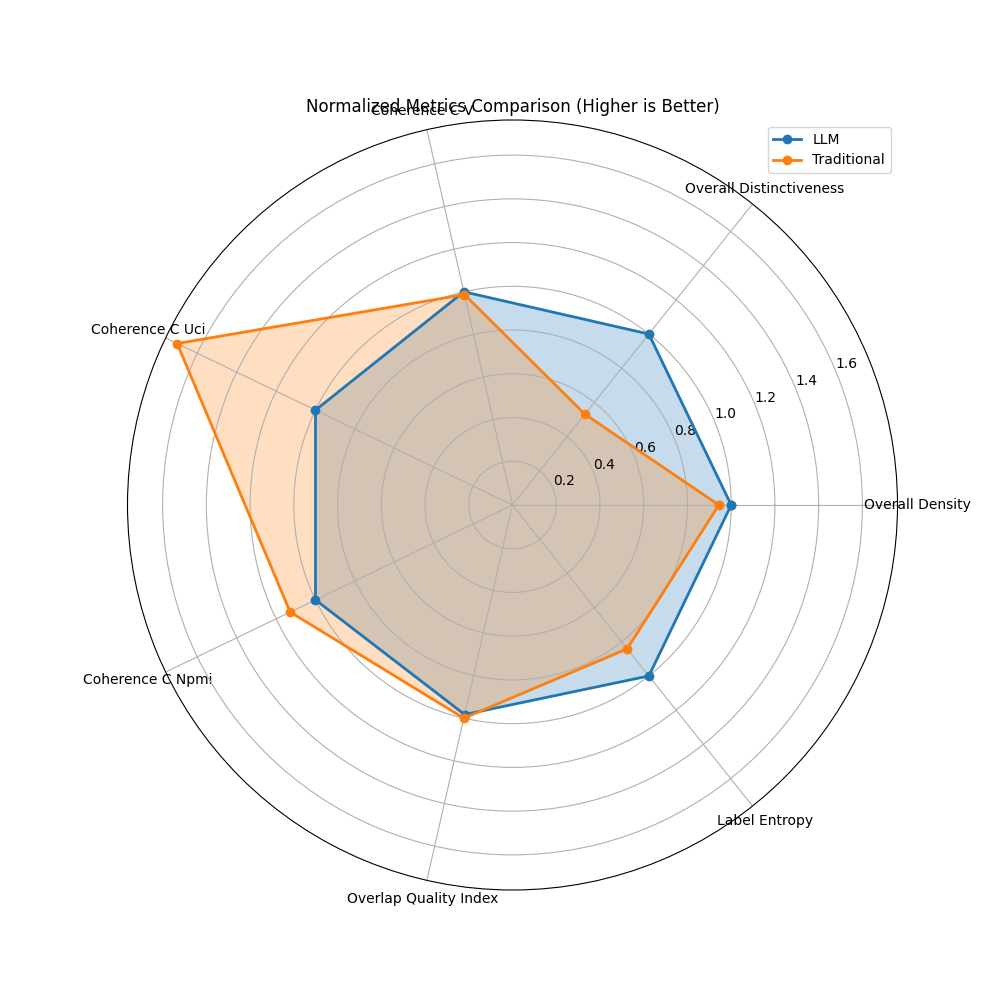

Model Comparison Report: LLM vs. Traditional Approach
Executive Summary
Based on 7 comparative metrics:
- LLM approach wins on 6 metrics
- Traditional approach wins on 1 metrics
- Overall recommendation: LLM
Key Metrics Comparison
| Metric |
LLM |
Traditional |
Difference |
Better Model |
| Overall Density |
0.0844 |
0.0796 |
0.0048 |
LLM |
| Overall Distinctiveness |
0.1837 |
0.0976 |
0.0861 |
LLM |
| Coherence C V |
0.3687 |
0.3640 |
0.0048 |
LLM |
| Coherence C Uci |
-0.4966 |
-0.8452 |
0.3486 |
LLM |
| Coherence C Npmi |
-0.0349 |
-0.0394 |
0.0045 |
LLM |
| Overlap Quality Index |
0.0781 |
0.0795 |
-0.0014 |
Traditional |
| Label Entropy |
2.6301 |
2.2125 |
0.4176 |
LLM |
| Avg Labels Per Doc |
3.7222 |
3.0000 |
0.7222 |
More labels is not necessarily better, depends on use case |
Label and Document Counts
| Metric |
LLM |
Traditional |
Difference |
| Label Count |
7 |
5 |
2 |
| Doc Count |
18 |
16 |
2 |
Label Quality Analysis
| Metric |
LLM |
Traditional |
Better Model |
| Avg Label Density |
0.0844 |
0.0796 |
LLM |
| Avg Label Distinctiveness |
0.1837 |
0.0976 |
LLM |
| Unique Top Words Count |
6.0000 |
5.0000 |
LLM |
Visualizations
Comparison of Key Metrics

Normalized Metrics Comparison
Distribution of Better Performance
Detailed Model Information
LLM Model Labels
- Advanced Persistent Threats (APT) (20 documents) - Top words: the, to, of, a, and
- Cyber Espionage (20 documents) - Top words: the, to, of, a, and
- Malware Analysis (20 documents) - Top words: the, to, of, a, and
- State-Sponsored Cyber Activity (20 documents) - Top words: the, of, to, a, and
- Network and System Security (20 documents) - Top words: the, of, to, a, is
- Threat Intelligence (20 documents) - Top words: the, of, to, a, and
- Phishing and Social Engineering (20 documents) - Top words: the, of, to, and, a
Traditional Model Labels
- cloudduke, ch, version (20 documents) - Top words: the, to, of, a, and
- attack, apt, module (20 documents) - Top words: the, of, a, to, and
- attackers, butterfly, cluster (20 documents) - Top words: the, of, to, a, and
- configuration, cozyduke, server (20 documents) - Top words: the, to, of, a, and
- domain, malware, backdoor (20 documents) - Top words: the, to, of, a, and
Conclusion
The LLM-based approach demonstrates superior performance overall, particularly in metrics related to
semantic coherence and quality of clustering. This suggests that for this specific document set,
the language model's understanding of context and semantics provides more meaningful topic groupings.